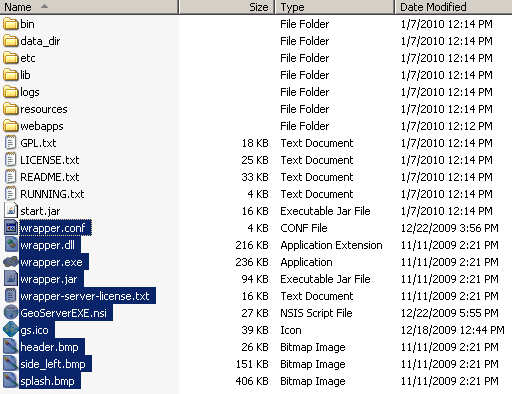
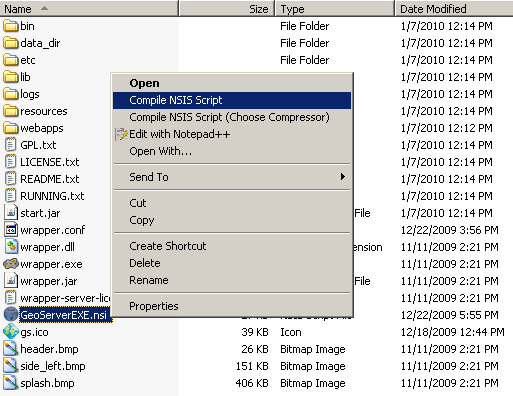

Build Windows installer¶
At the time the GeoServer project does not have financial resources and man power to stand up a Windows build server (if you can help with this, please contact the developer list). However you can create your own installer (using a Windows machine).
Note
This step requires a Windows machine.
Note
A community provided Powershell script that automates the following steps is available here.
Download and install NSIS.
Install the NSIS Access Control plugin. The simplest way to do this is to download the zip, extract the .DLL files (
AccessControl.dll) and copy it to the NSIS plugins directory (usuallyC:\Program Files\NSIS\Plugins\x86-ansi).Download and unzip the binary GeoServer package:
unzip geoserver-[VERSION]-bin.zip
Download and unzip the source GeoServer package:
unzip geoserver-[VERSION].zip
Copy the files
LICENSE.txt,src/release/GPL.txtand the following files fromsrc/release/installer/winfrom the Geoserver source GeoServer package to the root of the unpacked archive (the same directory level as thestart.jar):GeoServerEXE.nsi gs.ico header.bmp side_left.bmp splash.bmp wrapper.conf wrapper.dll wrapper.exe wrapper.jar wrapper-server-license.txt
Right-click on the installer script
GeoServerEXE.nsiand select Compile Script.
After successfully compiling the script, an installer named geoserver-[VERSION].exe will be located in the root of the unpacked archive.